Lattice Continuum
Structural OptimizationA temporary pavilion designed as a single continuous lattice shell, every beam tuned so the structure carries itself with the least material. Built in Karamba and pushed through Galapagos, the form negotiates three competing goals at once: minimum mass, minimum displacement, and balanced utilization.
-
Lattice shellone continuous beam network
-
Karamba FEAloads, supports, displacement
-
Galapagosmulti-objective optimization
Structural Optimization · MaCAD · IAAC · 2025–26
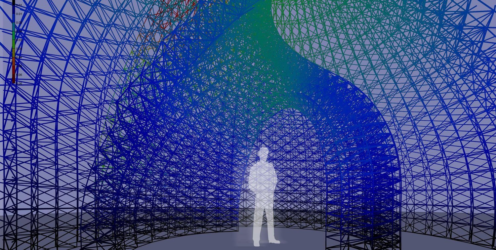
Design Process
The shell starts from a simple move: a bounding box, control points, a scale, a rotation and a loft, a geometry that later doubles as the brick form. Circulation and the relationship to the bounding box are resolved before any structure is added.
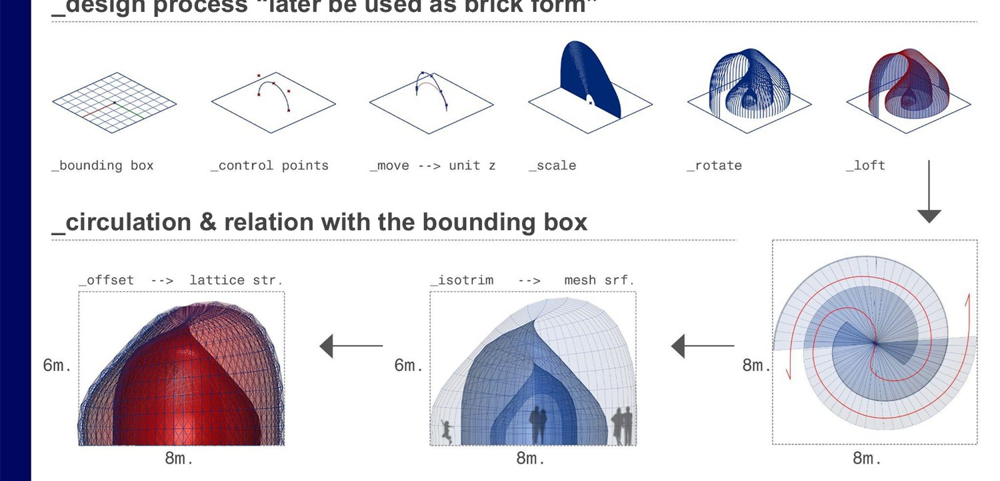
Supports & Loads
The pavilion is anchored by 204 fixed supports at its base and loaded in Karamba, so every optimization run is judged against a realistic set of boundary conditions.
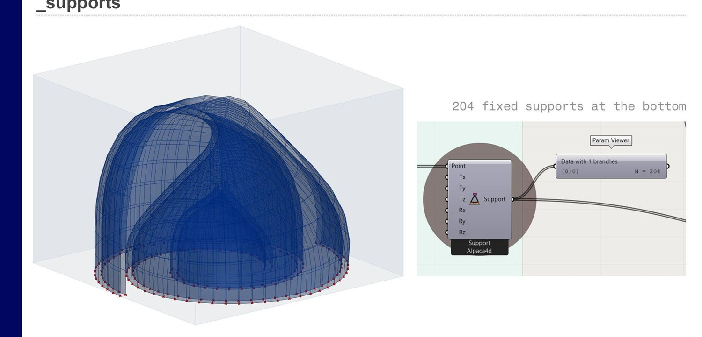
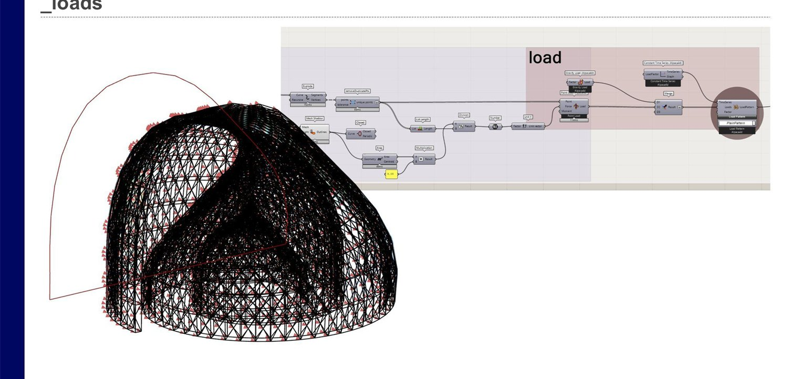
Optimization Strategies
The lattice is modelled as beam elements and explored along three strategies, minimize total mass, minimize maximum displacement, and balanced utilization, each pulling the design toward a different structural priority.
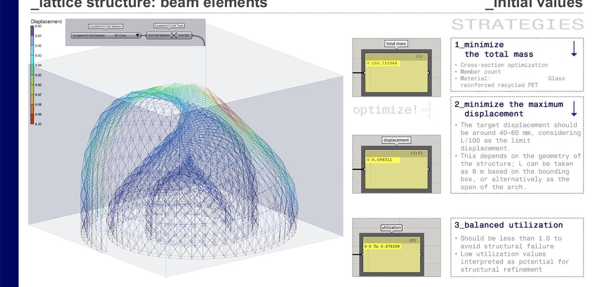
Case Studies
Successive cases trade the variables off against each other. Adjusting the form improves stiffness at a small mass cost but leaves the structure under-utilized; increasing member density lifts utilization; growing beam diameters cuts displacement sharply, at a steep mass penalty. Each case is read through mass, displacement and utilization together.
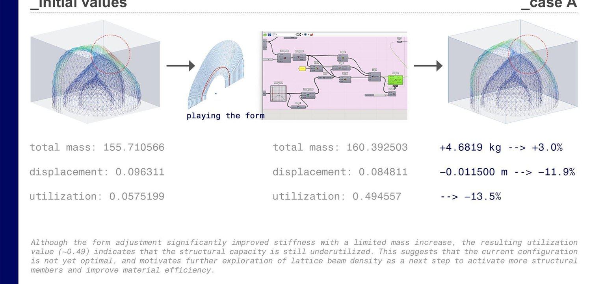
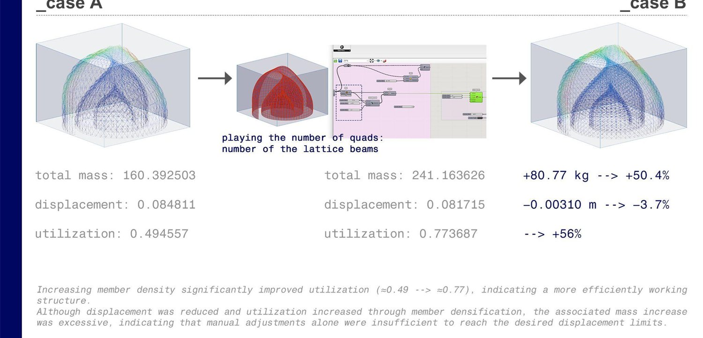
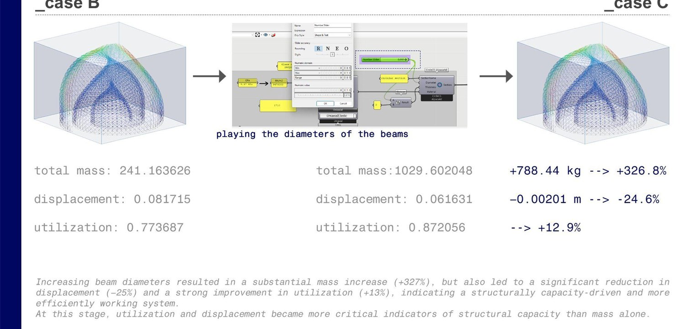
Galapagos Optimization
Because manual tuning alone couldn't reach the target performance, the evaluation was handed to Galapagos for a systematic search, confirming that the choice of initial configuration is decisive in guiding multi-objective optimization toward meaningful solutions.
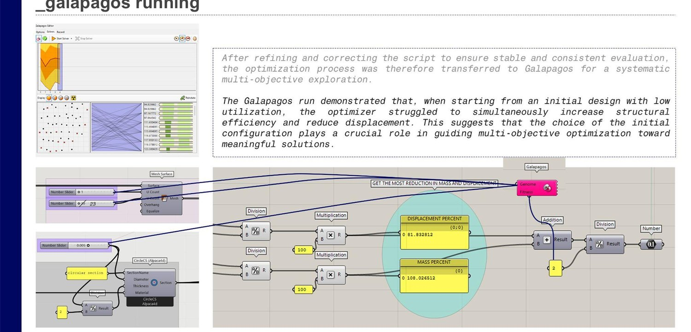
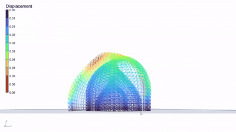
Toward Manufacturing
The last step asks how the shell gets built. Drawing on the KnitNervi flexible-formwork research and KUKA robotic constraints (after ACADIA 2019), the structure is imagined as a steel lattice prefabricated in strips and folded, an assembly logic driven by the robot's reachability and collision limits.
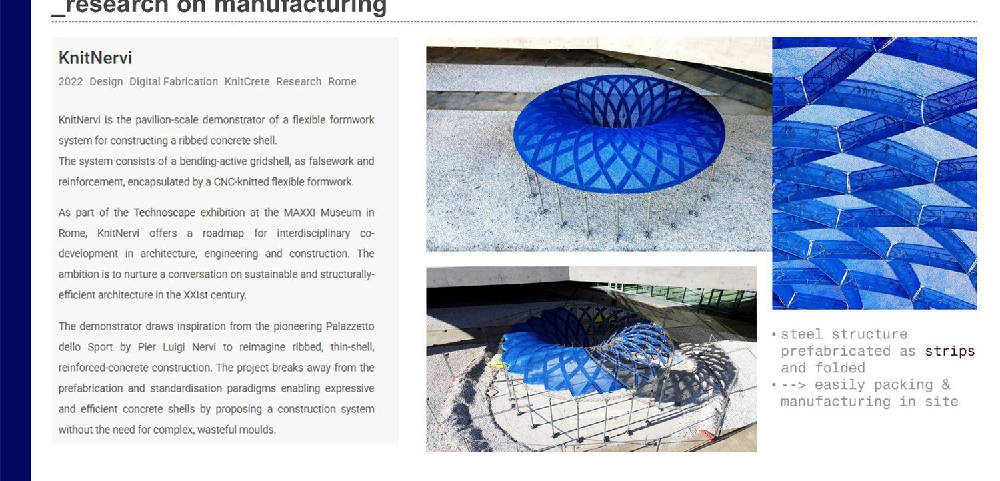
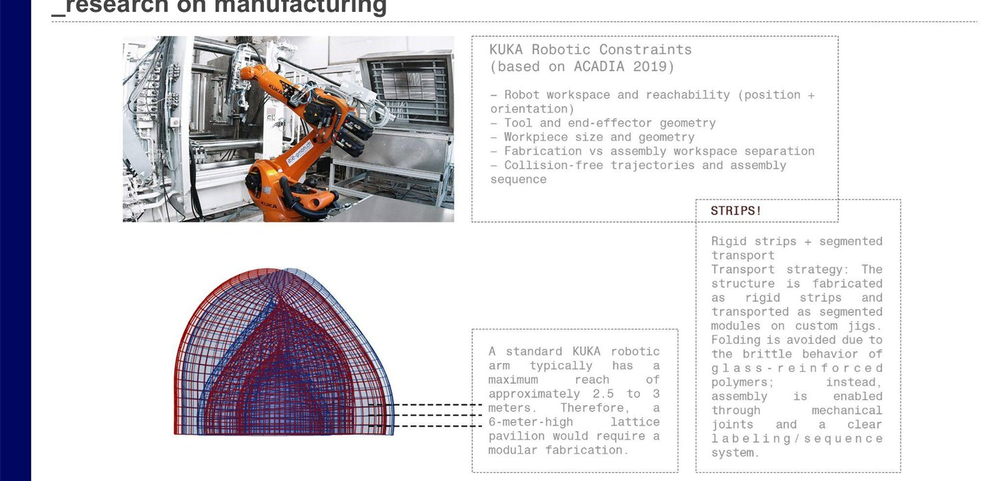